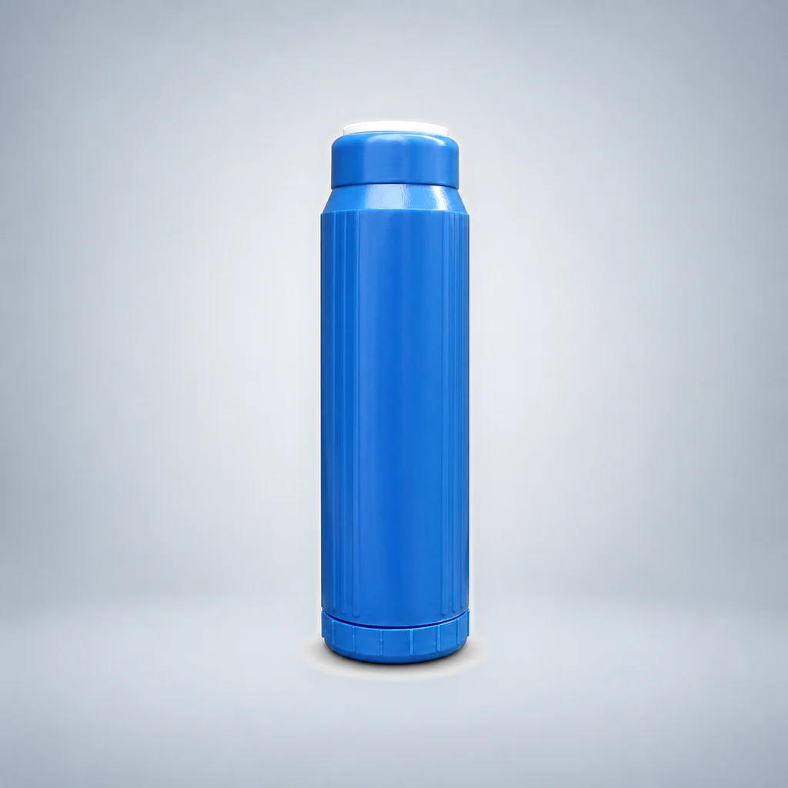
10-Inch Flat-End FOF Scale-Inhibition Filter Cartridge
- Format
- Specialty-media cartridge
- Filter media
- Scale-inhibition media
Use this guide to compare specialty-media cartridges by structure and supplied media composition. Mineralization media, FOF scale-inhibition configurations and cation-exchange resin cartridges are presented as separate sourcing options without unsupported health or treatment-performance claims.
Compare the listed models and open a detail page. Model records are counted separately from configurable dimensions; suitability must be confirmed for your project.

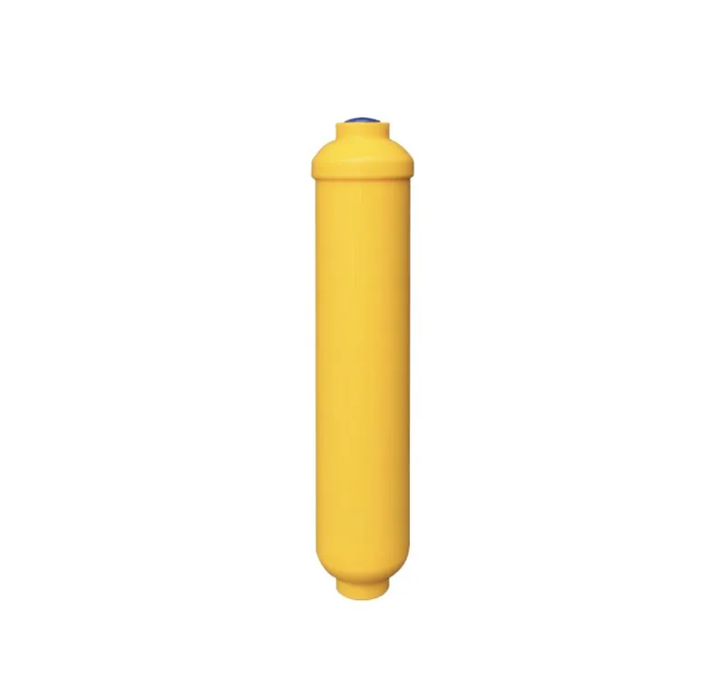
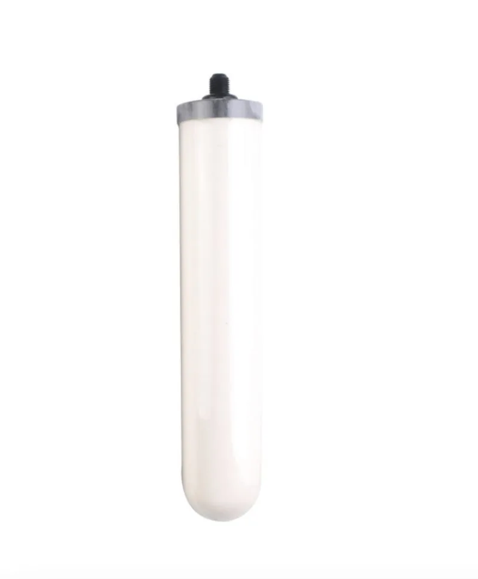
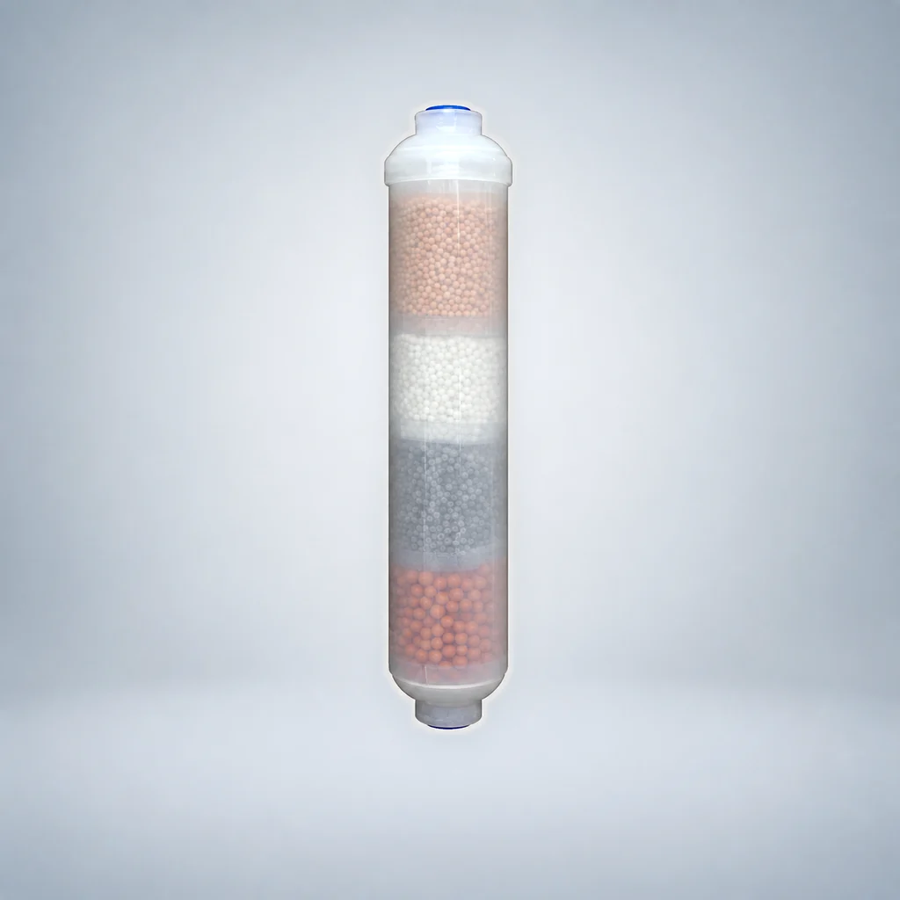
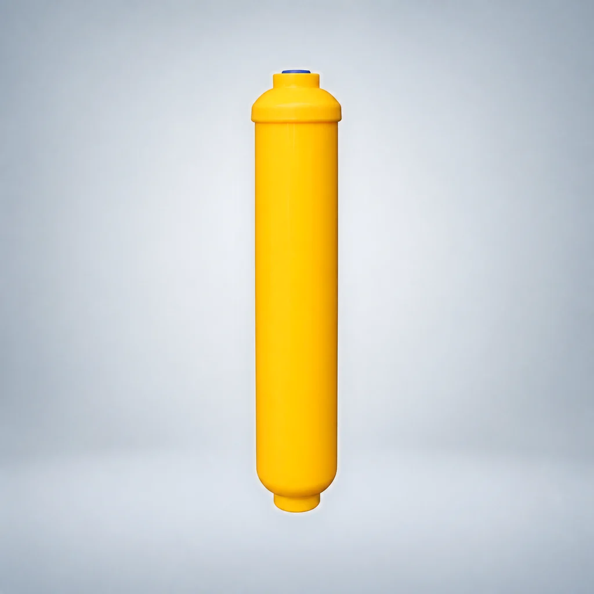
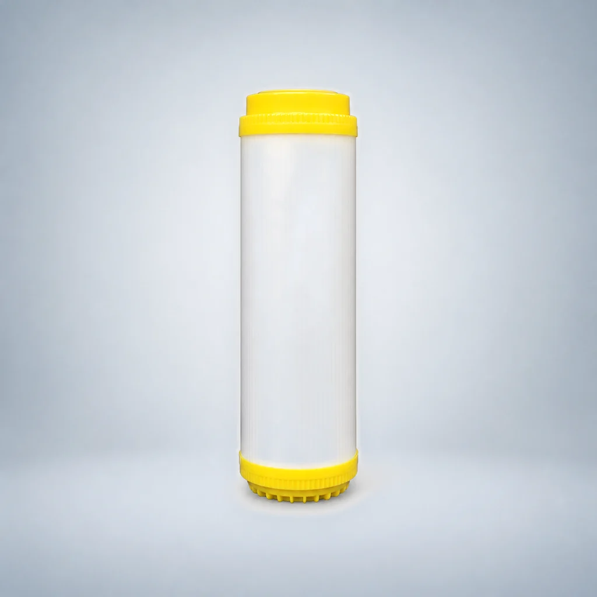
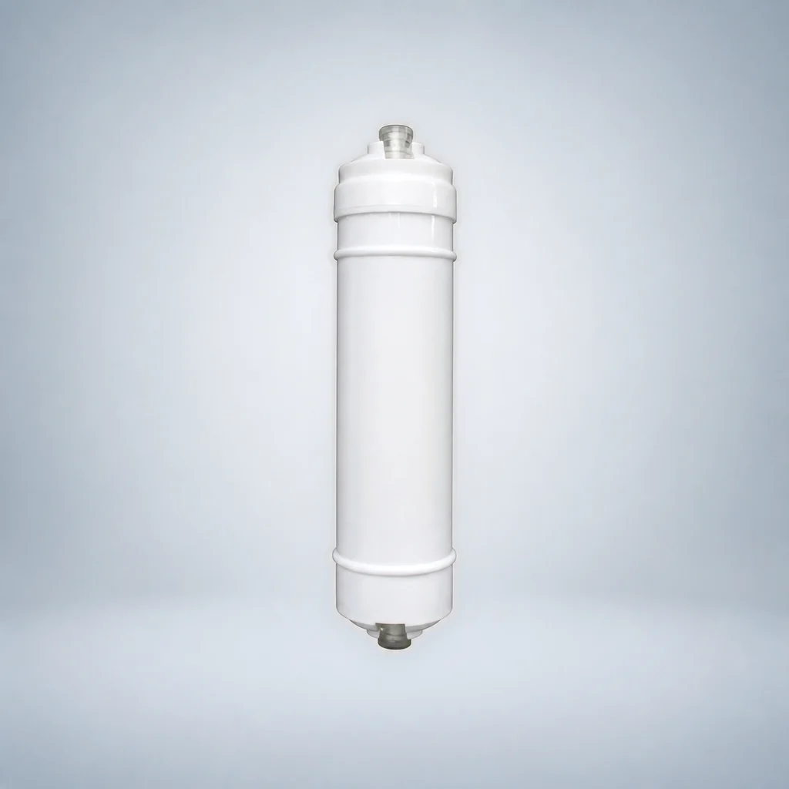
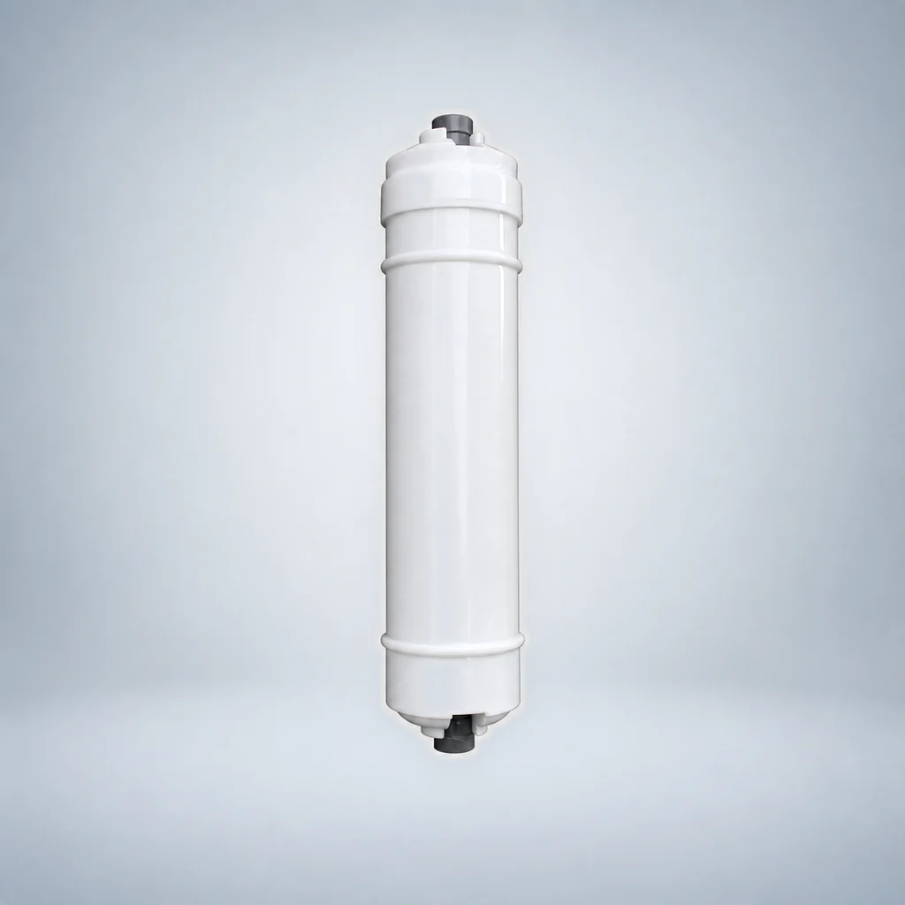
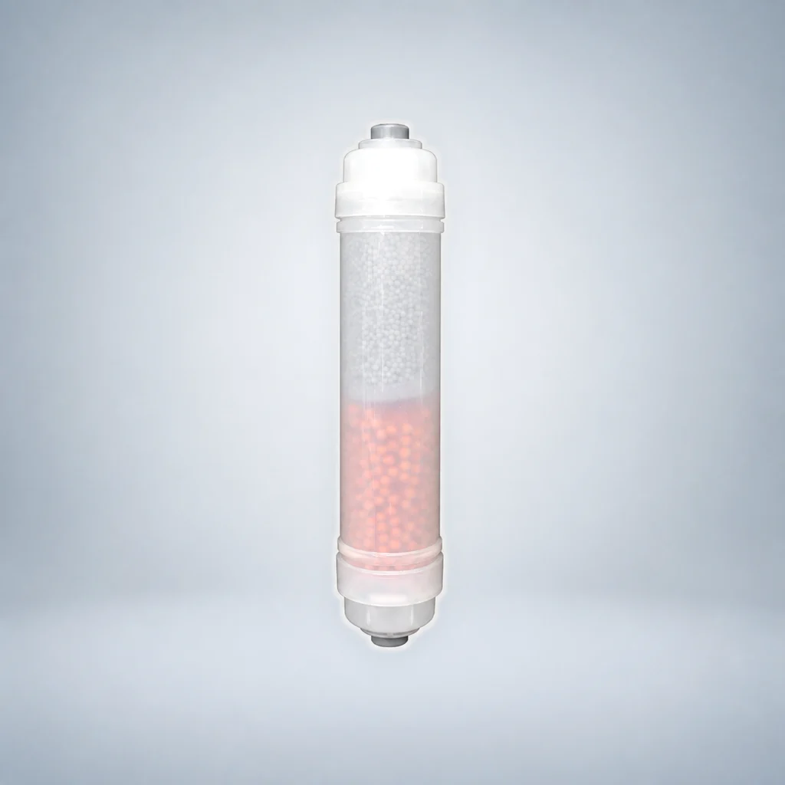
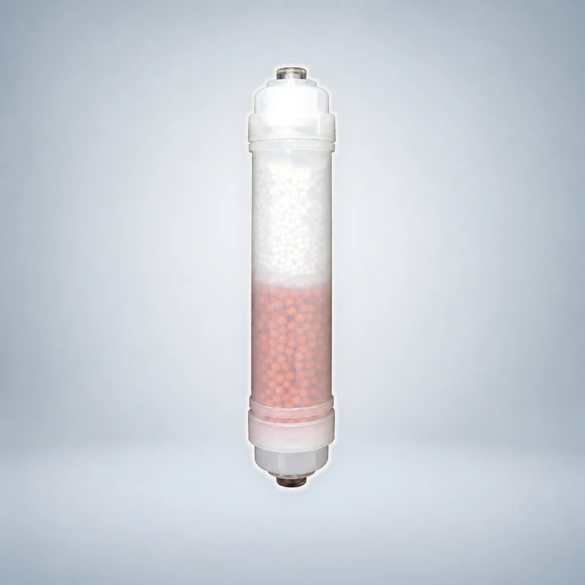
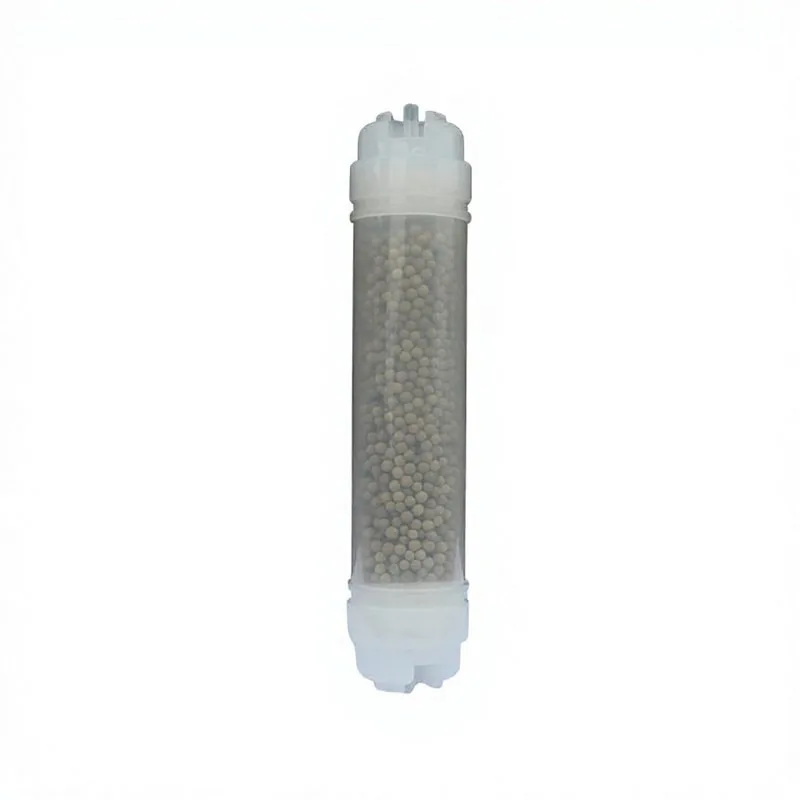
Choose the requirements you already know. A configuration with an unstated source specification is marked for confirmation instead of being treated as an exact match.
Select up to three configurations. You can copy a structured RFQ summary or continue to the inquiry form with the verified IDs and filters prefilled.
Scope: This tool narrows the reviewed OEM configuration list. Final connection, compatibility, dimensions and project requirements must still be confirmed before quotation.